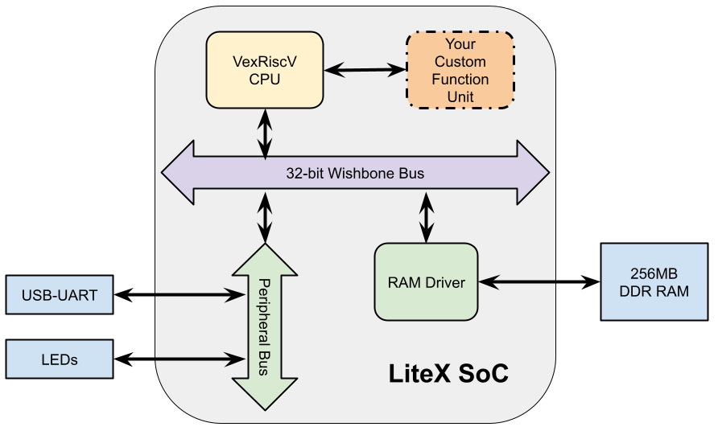

Litex SOC with Real Time Unit#
We use the Litex framework to demonstrate how to design Custom Functions to extending an FPGA-based RISC-V core in a way that it can fully support Real Time system requirements.

Real Time extensions to Litex#
A real-time processor core is a specialized microprocessor designed to handle real-time computing tasks where timing constraints are critical. These tasks require the processor to deliver results within a specified time frame, making them essential in systems where timely execution is crucial, such as in automotive control systems, industrial automation, medical devices, and telecommunications.
Key characteristics of real-time processor cores include:
- Deterministic Performance : Provide guarantees that tasks are completed within expected completion deadline.
- Prioritized Task Scheduling: Enable Operating System's schheduler to limit long context switch times which reduce available task utilization and minimize viable task switching granularity needed to prioritize them.
- Low Latency in Interrupt Handling: Minimize the amount of time elapsed from the source event that causes the preemption and the first instruction of the awakened task (known as interrupt latency).
- Reliable and Robust: Designed to operate reliably without unexpected failures.
Commercial vendors and IP providers offer such features as in-house solutions which are often proprietary and tightly coupled with the vendor’s instruction set architecture (ISA), target hardware family, and associated software stack. Examples of real-time processor cores include ARM Cortex-R series, Infineon AURIX TriCore, Texas Instruments’ C2000 series, and the Intel Atom processors with real-time extensions.
RISC-V processor for Real-Time Systems#
RISC-V ecosystem has been offering a modular, free, and open-source ISA and enables developing custom extensions. RISC-V community has been developing an extension to the Privileged specifications with the proposal of the RISC-V Core-Local Interrupt Controller (CLIC) to handle such real-time scenarios.
VexRiscv Core#
VexRiscv is a modular RISC-V core of adaptable pipeline depth with a plugin-based implementation. We propose to implement a new plugin to extend VexRiscv to support Real Time constraints to achieve best-in-class interrupt latency and fast context switching against commercial off-the-shelf (COTS) processor vendors, paving the road for RISC-V architectures in time-critical systems.
Detailed architecture can be found at Architecture.